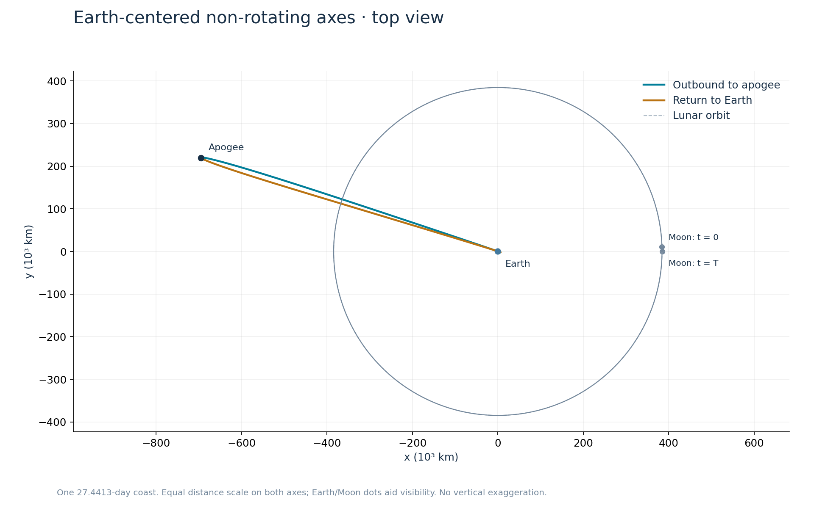
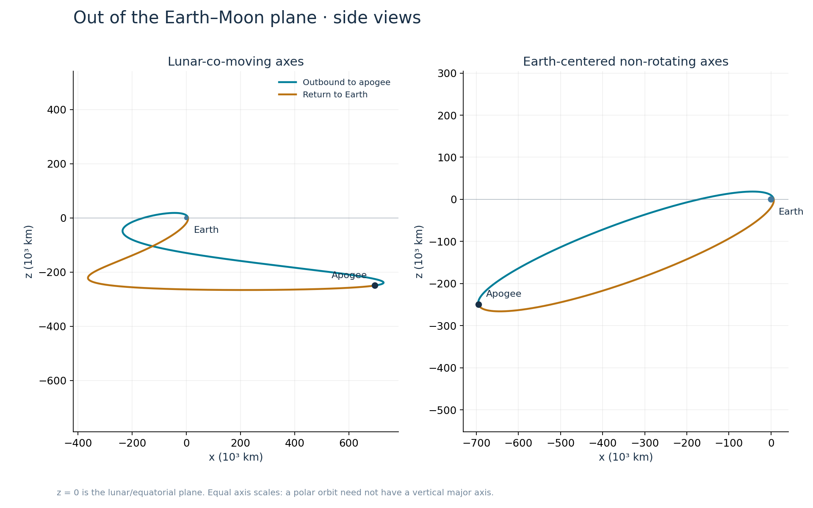
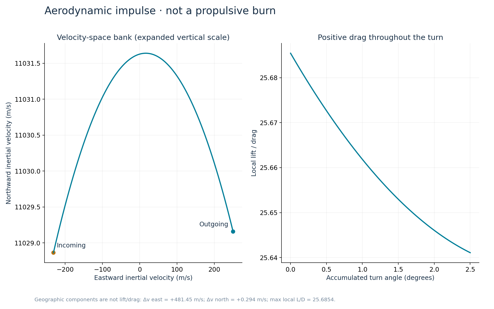

A polar pass.
A return in 27.44 days.
A near-polar trajectory that returns to Earth's atmosphere every 27.4413 days. An eastward aerodynamic turn at each atmospheric pass extracts energy from Earth's rotation and closes the orbit in the lunar-co-moving frame.
Explore the orbit
Computed trajectory over one 27.4413-day returnAmber: net Δv, length magnified ×20. Vectors are fixed at the return bank.
Playback covers one coast from departure to the next Earth periapsis. The Earth pass preset pauses at the atmospheric maneuver, 100 km above the surface. Use Incoming and Outgoing to inspect the velocity before and after the turn.
Top-down and
side-on views
Figures 01 and 02 look along Earth's rotation axis and project the trajectory onto the Earth–Moon orbital plane (XY). This projection omits height above and below that plane, giving the orbit its narrow appearance in Figure 02. Figure 03 shows that height in side-on XZ views. The interactive viewer starts at an oblique angle; use Top XY and Side XZ to compare these viewing directions.
The Coordinates menu selects the reference frame independently of the camera view. In the lunar-co-moving frame, Earth and Moon stay fixed. In Earth-centered non-rotating axes, the Moon moves around Earth. Both frames have top-down and side-on views.
Osculating inclination is the angle between the instantaneous orbital plane inferred from the spacecraft's Earth-relative position and velocity and the Earth–Moon orbital plane. In this aligned-spin model, 90° is polar. At the atmospheric maneuver it changes from 91.134° incoming to 88.772° outgoing. During the coast it spans approximately 81.53°–91.16°.
The position and post-maneuver velocity repeat in lunar-co-moving axes every 27.4413 days. This is a near-1:1 return: each coast lasts 1.00438 lunar months, and the orientation in non-rotating axes advances by 1.577° beyond a full revolution.




The atmospheric maneuver
At the atmospheric pass, the spacecraft moves north at about 11.03 km/s, while the atmosphere moves east at 446 m/s. The turn changes the spacecraft's eastward velocity component from −231 m/s to +250 m/s. Drag acts opposite the spacecraft's velocity relative to the atmosphere; lift acts perpendicular to that relative velocity.
Drag contributes 18.734 m/s southward and lift contributes 19.028 m/s northward, giving a net change of 0.294 m/s northward. Drag remains positive throughout the modeled turn. Figure 05 shows the velocity components and the local lift/drag ratio along the turn.
The maneuver draws 214.85 kJ/kg from Earth's rotation and dissipates 207.01 kJ/kg relative to the atmosphere. Its net orbital-energy gain of 7.84 kJ/kg balances the preceding coast's loss.
- Eastward
- +481.452 m/s
- Northward
- +0.294 m/s
- Radially outward
- 0 m/s
Components use local east, north, and radial directions. Vehicle mass and maneuver duration are required to convert these velocity changes into average forces. Peak loads require a finite-duration atmospheric model.


Initial conditions,
trajectory data,
and reproduction code
The technical note gives the equations, units, six-state initial condition, event definitions, atmospheric maneuver, force decomposition, and numerical residuals. The standalone Python script propagates the fixed initial conditions, applies the maneuver, and reports closure errors and the energy budget.
The calculation uses circular restricted three-body gravity with the primary spin axis aligned to the lunar orbital normal. Lunar gravity perturbs the coast, and an instantaneous atmospheric turn closes the return. Long-term stability, finite atmospheric flight, collection yield, and physical vehicle performance require additional analysis.